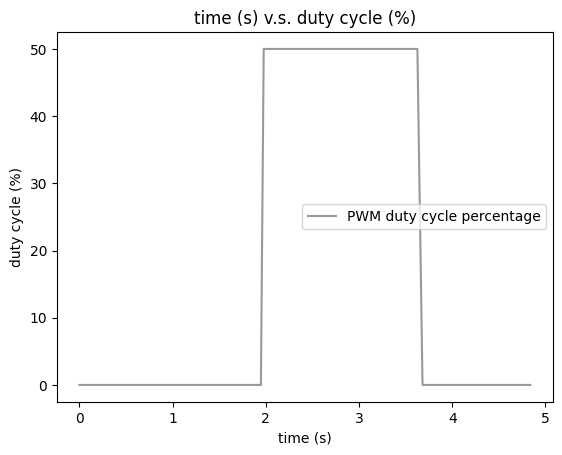
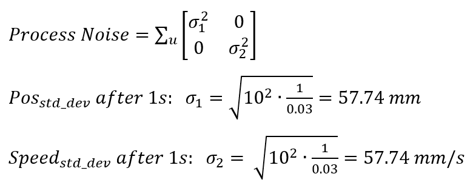

The objective of Lab 7 is to implement a Kalman Filter, which can help to execute PID control faster. The Kalman Filter can supplement the slowly sampled ToF values, so that the robot can speed towards the wall as fast as possible. This report describes how I decide the parameters for the Kalman filter and after that, I implemented it with the PID data collected from lab 6 to verify its performance.
Lab Tasks
Estimate drag and momentum
Kirstin's lecture gives detailed explanation on Kalman filter. To design a Kalman filter for my own robot, I need to build a state space model for the system by estimating the drag and momentum terms for the A and B matrices, as shown below
State Space Equation
where d is drag term and m is momentum term.
Drag & Momentum
I get these values using step response, which is to drive the robot towards the wall, recording the data including PWM, distance sensor readings and timestamps during the process, try to get the robot run at a steady state for a while with maximum speed from PID control in lab 6, eventually brake the robot by reverse spinning for a short time to counteract to inertance hence to prevent the robot hits the wall.
I start the step response measurement by placing my robot at around 1600 mm away from the wall and I delay it for 2 seconds before setting the PWM to be 50% duty cycle which is the highest PWM I obtained from my PID control in lab 6. Eventually, the robot will keep moving forward until the distance is less than 200 mm when robot brakes actively. With constant PWM signal, the steady state appears when the robot stops accelerating and run at a constant speed. During the whole process, the data are collected and stored in arrays, and are sent to computer side via bluetooth at the end.
To conclude, the step response measurement process is:
1. 2 seconds of stationary state for robot, with "constant" distance reading of around 1600 mm and PWM duty cycle percentage of 0.
2. Moving forward until ToF reading is less than 200 mm during which the PWM value is 50%.
3. Brake actively and stop for 1 second during which the distance reading is "constant" and PWM value drops back to 0.
The distance measurement is plotted as below, which shows the distance between robot and wall during the whole step response measurement process.
Step Response Distance
Similarly, the PWM duty cycle percentage is shown below.
 PWM duty-cycle Percentage
Then, according to the distance measurements and timestamps, the velocity can be computed and plotted as below.
 Velocity
Velocity
Since the robot starts to move after two seconds, the velocity shown before 2 seconds are actually results from the distance measurement errors when robot is stationary. So we are interested in the velocity after 2 seconds, where the velocity continues increasing and keeps constant for a short period at around 1.6 m/s before the robot stops. By processing the velocity data in python, I can get the steady state velocity to be 1564 mm/s and the 90% rise time to be 1.516s.
 Extract Velocity & 90 percent Rise Time
Extract Velocity & 90 percent Rise Time
Therefore, based on the step response data I obtain, I can compute drag and momentum terms based on the fomula before as:
Drag & Momentum Computation
Now, I have my A and B matrices to be:
 A & B Matrices
A & B Matrices
Kalman Filter Initialization
After determining A and B matrices by step response measurement, with given C matrix which is C = [-1 0] (meaning that I am interested in the negative distance from the wall by setting the wall state to be 0 and the distance away from the wall is negative value) from lecture, I need to further decide filter parameters including process noise and measurement noise.
 C Matrix
C Matrix
To specify process noise and measurement noise, according to the formula from lecture, I need three covariance values, among which two for the process noise and one for the measurement noise:
 Process Noise & Measurement Noise
Process Noise & Measurement Noise
Since the process noise is dependent on ToF sensor sample rate, I find my sampling rate which is
 Sample Rate of ToF Sensor
Sample Rate of ToF Sensor
Therefore, I can have my process noise (related to robot position and speed) to be computed based on the equations below, where 0.03 is my sampling rate.
 Process NoiseThe measurement noise represents the standard deviation of each ToF sensor's distance measurement in mm. As suggested by Kirstin, it can be set as 20 mm, meaning that for each measurement, there is a likely error of 20 mm. Therefore, I have my measurement noise as:
Measurement NoiseThen, I can discretize my A and B matrices based on my sampling rate and so that implement discretized matrices in the Kalman filter.
Now, the parameters setup for Kalman filter is completed, and I can define my Kalman filter by replacing my computed parameters to the Kalman filter template definition provided by Kirstin. The final Kalman filter code snippet is given as below.
 Kalman Filter Parameters Setup
Kalman Filter Definition
Kalman Filter Parameters Setup
Kalman Filter Definition
Kalman Filter Implementation
The time v.s. PWM duty cycle percentage plot is shown following.

The long time of 25 percent duty cycle is because the robot is close to the wall so that PID gives the lowest speed to robot, and when the robot is moving forward and backward to find the exact 304 mm reading, the PWM is always 25 percent. When it finally finds the 304 mm stop point, PID is stopped and PWM is set to 0.
Additional Tasks
Wind-up Implementation & Discussion
Wind-up protection is implemented to protect the integrator in the PID control from being too large to affect the PID permormance. Since the integrator part of PID is a mathematical operation that performs the integration of a function with respect to time, its value can accumulate to be quite large as time goes, which can affect the PID outcome significantly with a long time integration. Therefore, I set a saturation point for my integration part as shown below.
When error integration becomes greater than or equal to 10000, it equals to 10000 constantly. As my Ki is 0.0001, it only contributes 1 percent to my PWM duty cycle percentage, hence to avoid negative impact on PID output.
Texts and Videos by Zhongqi Tao